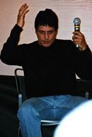
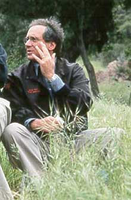
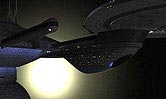
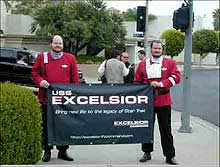
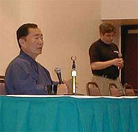

|


|
Captulo
1 - Do fim a um novo comeo Em segundo lugar, a rpida e traumtica passagem de Ronald D. Moore por Voyager. Um dos roteiristas mais aclamados do franchise e f confesso de todas as verses de Jornada nas Estrelas, Moore havia concludo seu trabalho em Deep Space Nine e agora se juntava aos roteiristas de Voyager. A alegria dos fs durou pouco. O trabalho do roteirista foi visto apenas em dois episdios da srie (apenas um deles, "Survival Instinct", efetivamente roteirizado por ele), pois em questo de dias desentendimentos entre ele e a dupla Brannon Braga e Rick Berman, ento os produtores-executivos do programa, fizeram com que Ron deixasse o franchise. A histria nunca foi muito bem explicada, mas o que circula que provavelmente o roteirista quis chegar em Voyager em p de igualdade com os dois produtores --desejo que obviamente no foi concretizado. Moore se sentiu desprezado por Berman e Braga, que, segundo ele, chegaram at a realizar reunies secretas s costas do recm-chegado. Egos parte, quem perdeu mais foram os fs que no tiveram a chance de ver o que Ron seria capaz de fazer com os potencialmente interessantes (mas pouco desenvolvidos) tripulantes da nave perdida no quadrante Delta.  Alm disso, a audincia de Voyager continuava descendo a ladeira, depois de uma estria espetacular em 1995 (o piloto "Caretaker" foi o episdio com maior audincia da histria da rede UPN). Durante os bons e velhos tempos de A Nova Gerao, a audincia mdia de um episdio era de cerca de 12 milhes de pessoas. Em Voyager, o nmero era de apenas 3 milhes.Para completar o quadro de insegurana, o ltimo investimento cinematogrfico de Jornada, "Insurreio", havia sido uma decepo --para a Paramount (com uma bilheteria nacional que s deu para pagar o filme) e para os fs. Os atores da Nova Gerao tinham um pr-contrato para apenas trs filmes. A partir de agora, uma nova tentativa exigiria difceis negociaes com cada um deles. E, com o resultado do filme roteirizado por Michael Piller, alguns duvidavam at de uma nova investida nas telas grandes. Ou seja, tudo levava a crer que Jornada nas Estrelas estava em crise. Muitos falavam que o melhor seria acabar Voyager e dar um respiro de alguns anos para revitalizar o franchise. Os mais radicais pediam at um fim prematuro para a srie, antes que completasse suas planejadas sete temporadas. E o pior: alguns temiam que a Paramount pensasse o mesmo. Para o bem ou para o mal, no foi assim que aconteceu. Aparentemente disposta a arrancar at o ltimo tosto da galinha dos ovos de ouro de 35 anos do estdio, a Paramount pediu a Rick Berman e a seu fiel escudeiro Brannon Braga que criassem mais uma srie de TV para substituir Voyager e dar continuidade saga de Jornada, j desgastada por uma crise de meia-idade. S que Rick e Brannon no esperavam encontrar um obstculo que se fez sentir de forma to avassaladora, um fator nunca antes enfrentado pelos produtores do franchise. A internet. A ltima vez que Berman, sucessor do criador Gene Roddenberry no comando do franchise desde 1988, sentou-se com seus comandados para criar uma srie de Jornada (momento em que Voyager foi concebida), estvamos em 1994, tempo em que a internet ainda usava fraldas. Seis anos depois, a realidade era outra. Apesar de j estarem acostumados aos boatos acerca das sries em produo (Deep Space Nine e Voyager), o pessoal envolvido com Jornada simplesmente no estava pronto para lidar com o rolo compressor de boatos que giraria em torno do novo projeto, ento chamado pelo codinome "Srie V". A cada dia que passava surgia um novo suposto "conceito de Brannon Braga e Rick Berman" para a quinta srie do franchise. O primeiro boato que surgiu nasceu ainda em 1999, e dizia que a Srie V teria o nome "Flight Academy" e sua premissa seria algo do tipo "Academia da Frota encontra o pessoal do Top Gun". Ou seja, um grupo de cadetes envolvidos em perigosas misses de pilotagem no melhor estilo de Star Wars. Como no colou, outros boatos foram surgindo. Ouviu-se uma histria sobre a srie da Enterprise-F, sob o comando de William Riker. Outra apontava outra Enterprise, no sculo 25. Outra trocava o sculo pelo 26, e uma at ousou apontar uma "nave temporal Enterprise", do sculo 29. Alguns outros rumores apontavam uma srie com base na Seo 31, uma fora da Federao composta por espies ultra-secretos.  Essas idias iam e vinham, ao sabor do vento, alternando-se na crista da onda. A Berman e Braga s cabia combater os rumores --negando tudo. At a verdade. Se esforando ao mximo para tapar os ouvidos e ignorar os rumores malucos, a dupla tentou voltar ao trabalho. Mas havia gente disposta a mais uma vez atrapalhar os planos.Aproveitando-se da insatisfao geral com o atual estado do franchise, um grupo de fs resolveu revitalizar um sonho aventado desde 1991: ver as aventuras de Hikaru Sulu no comando da USS Excelsior. A idia para uma srie com o capito Sulu foi sugerida pela primeira vez por Grace Lee Whitney (Janice Rand, a ordenana de Kirk na Srie Clssica e ento oficial de comunicaes da Excelsior). Ela apresentou sua sugesto ao at ento modesto George Takei, que gostou de se ver na cadeira de capito por mais do que os 15 minutos de fama que teve em "Jornada nas Estrelas VI - A Terra Desconhecida". O simptico ator e poltico engajado, mas pouco votado (ele chegou a disputar uma cadeira no Congresso dos EUA h alguns anos, mas perdeu), acabou convencido de que uma srie com ele era de fato uma possibilidade vivel. S que ningum acreditava nela --at 1996.  Nesse ano foi ao ar o episdio "Flashback", da terceira temporada de Voyager, em comemorao aos 30 anos de Jornada. Nele, a estrela convidada era ningum menos que George Takei, como o capito Sulu, a bordo da USS Excelsior.A partir de "Flashback", Takei voltou a fazer campanha para sua srie. Quando esteve no Brasil, para participar de uma conveno, em setembro de 1996, Takei chegou at a ir ao programa "J Soares Onze e Meia", do SBT, para fazer seu lobby pela srie. Apesar dos esforos, repetidos pelo ator em todas as partes do mundo, pela segunda vez, a idia no decolou. O que nos leva de volta internet. J com quase 35 anos de idade, Jornada nas Estrelas foi colecionando, ao longo do tempo, milhares de fs insatisfeitos com a direo que o franchise estava tomando. Aproveitando-se da atual fragilidade da marca, esses trekkers usaram a rede mundial de computadores para elaborar uma campanha capaz de trazer de volta os bons e velhos tempos da Srie Clssica. Mas com Kirk morto e enterrado em Veridian III (apesar de tambm ter surgido na poca uma campanha destinada a ressuscitar o capito mais "galinha" da histria da Frota Estelar), os saudosos fs com um senso de realidade um pouco mais apurado resolveram se agarrar ao velho sonho de Takei e criar uma campanha por "Jornada nas Estrelas - Excelsior".  Arregimentando milhares de colaboradores espalhados pelo globo, a campanha conseguiu chegar mdia, dentro e fora da internet. Mais de mil cartas foram escritas Paramount a fim de convencer o estdio de que Jornada deveria voltar s suas razes, sob a batuta de Hikaru Sulu. O prprio Takei voltou a tomar parte no esforo, declarando ao Sci-Fi Channel que adoraria atuar novamente como Sulu e chegando a vestir uma camiseta da campanha durante o Grand Slam, maior conveno de Jornada nos EUA, em abril de 2000.Uma vez mais, apesar da dedicao e do engajamento dos fs, parecia que a Paramount iria optar pela alternativa de Rick Berman e Brannon Braga. Foi o prprio Braga que fez questo de enfatizar que no haveria srie com Sulu, aproveitando para deixar um recado a todas as campanhas promovidas por fs. "Eu realmente gosto do Sulu", disse Braga ao Sci-Fi Wire, site de notcias do Sci-Fi Channel. "Fizemos um episdio do Sulu em Voyager. Se vai haver ou no algum tipo de projeto com o Sulu, est fora do meu domnio. No estou sabendo de nenhum plano para isso. Eu ficaria muito surpreso. Tambm existe uma campanha 'Tragam Kirk de Volta'. Algumas pessoas querem ver a Academia da Frota, algumas querem uma srie Borg. Estamos de olho nessas coisas. E h uma poro de rumores e campanhas acontecendo. Mas acho que nenhuma delas ir influenciar o que estamos fazendo."  No Grand Slam de 2001, Takei aceitaria sua derrota, dizendo que os produtores haviam optado por outra premissa. O ator desejou a Rick Berman e Brannon Braga boa sorte na nova investida e saiu graciosamente de cena. Rick e Brannon haviam prevalescido, deixando claro que o fandom no seria capaz de exercer presso sobre a fora criativa da dupla.Restava aos dois voltar ao trabalho. Que no seria fcil, diga-se de passagem. Alm do poder de persuaso dos fs, Berman e Braga enfrentavam tambm outra dificuldade, desta vez na outra ponta da equao: business. A rede de TV "oficial" de Jornada nas Estrelas desde 1995, data de sua criao, a UPN (United Paramount Network), empresa que era de dois acionrios: a Chris-Craft e a Viacom (empresa-me da Paramount Pictures). At a, tudo bem. S que, s vezes, a entropia a maior lei na economia. Por conta disso, a Viacom decidiu comprar outra rede de TV, a tradicionalssima CBS. Detalhe: a legislao americana proiba que um mesmo conglomerado tivesse duas redes de televiso. No satisfeita com a baguna, a Viacom resolveu acionar uma clusula em seu contrato de sociedade com a Chris-Craft, que a partir daquele momento seria obrigada a vender sua metade na UPN ou comprar a metade pertencente Viacom. A UPN, e com ela, Jornada, tinham um futuro incerto. Ao fim de intensas negociaes, em maro de 2000 a Chris-Craft optou por vender sua metade Viacom. Ou seja, no fim tudo comeou como terminou. A legislao americana tambm foi modificada para permitir Viacom manter UPN e CBS na sua lista de posses (que inclui outras "empresinhas", como a Blockbuster e a Nickelodeon). O nico resultado dessa volta de 360 graus foi um atraso no cronograma de criao, aprovao e produo da quinta srie de Jornada. De incio, os produtores miravam uma estria em setembro de 2000. Ela logo foi parar em janeiro de 2001 e finalmente em setembro de 2001. E at essa data foi ameaada por potenciais greves de atores e roteiristas. Felizmente a ameaa acabou no se concretizando, pois escritores e produtores chegaram a um acordo, em maio de 2001, desestimulando os atores a carregarem, sozinhos, uma greve que abalaria as estruturas de Hollywood para a temporada 2001/2002. Enquanto isso, Rick Berman e Brannon Braga estavam furiosamente a rabiscar suas idias. Quando a poeira baixou, viu-se que talvez eles de certo modo preenchessem os anseios dos fs da Srie Clssica. A prxima srie, criada pela dupla e aprovada pela Paramount, seguiria a moda instaurada pelas pr-sequncias de Star Wars. Jornada, em plena meia idade, olhava para trs e relembrava a prpria infncia. O quinto captulo da saga televisiva criada por Gene Roddenberry contaria o comeo da explorao espacial pela humanidade, antes mesmo do surgimento da Federao Unida de Planetas. |